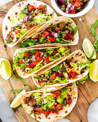

These 3 ingredient chicken tacos are so easy to make and so tasty! the perfect meal for busy weeknights. A 30 minute meal in your instant Pot or let it cook all after noon in your slow cooker.This chicken taco meat is amazing in soft or hard tacos, or on nachos!